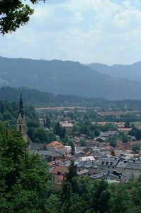
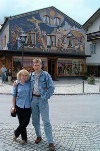

|
Привет, друзья!
Я, кстати, пишу это письмо уже целую вечность, несколько месяцев.
Попишу маленько, затем заброшу за недостатком времени, потом опять
попишу, потом опять заброшу... И все о том, как бурно мы провели
лето. Видно, это у меня вошло в традицию - вспоминать о лете на
носу зимы.
В июне ездили в отпуск в Европу. Сбылась, наконец, наша давняя
мечта побывать у Парижу. Это просто был кайф! У нас вся неделя,
которую мы там провели, была занята. Мы даже ни в один магазин
не зашли. Лувр, Эйфелева башня, Триумфальная арка, Нотрдам де
Пари (Собор Парижской Богоматери), Сена, кораблики... Эх, все
это теперь как во сне.
От Лувра мы жили, оказывается, совсем недалеко, в семи минутах
ходьбы. Путь от гостиницы к Лувру пролегал через парк, который
примечателен обилием разного рода модернистских импрессионистских
скульптур, причем почти каждый день добавлялось по новой скульптуре.
Что они отражают, описать трудно. Поэтому самые удачные фотографии
мы предоставляем вашему вниманию. Разбирайтесь сами, что сии скульптуры
символизируют :).
Научившись ходить до Лувра, мы первые
3 дня начинали свои экскурсии по городу только от него. И возвращались
вечером тоже к Лувру, дабы затем дойти до дому, до отеля то бишь.
Правду
сказать, внутренний дизайн Лувра нас с Андрюшей не то чтобы разочаровал,
но, во всяком случае, рассеял наши представления. Понятно, что
к картинам и иным художественным произведениям это не относится.
Я имею в виду всего лишь дизайн. Уж слишком он нам показался модернизированным,
отчего общая обстановка теряет некоторую таинственность что ли.
Просто сам по себе Париж характеризуется такой изощренной архитектурой,
что невольно ожидаешь увидеть внутри помещений нечто подобное.
А внутри Лувра... такого не оказалось. Но зато живопись, скульптуры!
- просто класс!

Посмотрели наконец-то
на Мону Лизу. Правда пробраться к ней было очень трудно, ибо вокруг
нее с размахом на весь зал столпились фотографы. Я только не представляю,
насколько хорошо могли получиться их фотографии, - ведь Джоконда-то
была за стеклом. Причем не просто полотно под стеклом, как это
обычно бывает. А в данном случае стекло ограничивает доступ к
глубокому проему в стене. И из той глубины тебе загадочно улыбается
знаменитейшее творение Леонардо да Винчи.
Также имели счастие лицезреть Нику
Самофракийскую, дотоле виденную нами только на альбомных иллюстрациях.
Апартаменты
Наполеона тоже так ничего себе хо-хо! Особенно меня поразили потолки
в сиих апартаментах. Я очень жалела, что не догадались поставить
посередь его комнат по лежанке (исключая его собственную, конечно),
чтобы человек мог без устали и шейного напряжения созерцать роспись.
Это же чудо просто, а не потолки! Наполеон, наверное, страдал
от бессоницы. Но было ли это следствием или причиной потолков,
остается загадкой.
Раз
уж речь зашла о Наполеоне, расскажу и о посещении нами Собора
Инвалидов. Это куполообразное строение, увенчанное золотой короной
- одно из наипервейших достопримечательностей Парижа (о коем я,
к стыду своему, ранее никогда не слышала). Когда-то это здание
служило приютом для старых солдат-инвалидов, вынужденных нищенствовать.
А позже оно сделалось местом захоронения членов семьи Бонапарт.
Прямо
под куполом в шести, вложенных друг в друга гробах (как матрешка,
- да простит мне Господь это кощунство) из различных материалов,
покоится прах Наполеона.
Вообще, похоже, французы маленько повернуты
на своем Наполеоне. Да что и говорить, если даже российские вояки
1812 года, не стесняясь, боготворили его. В чем же была загадка
этого маленького, всегда сурового, человечка?..
А кроватка у него, действительно,
малюсенькая. В длину, конечно же...:)
Но всем этим Собор Инвалидов не
ограничивается. Он плавно перетекает в музей оружия, а здания
музея, в свою очередь, плавно перетекают одно в другое, образуя
всем этим сооружением целый комплекс. И с пушками, и с площадью,
и с оградой. Мы с Андрюшей потратили почти весь день, чтобы все
здания обойти. Для меня, кстати, музей представлял интерес в основном
не из-за оружия, а по причине собранной за несколько веков коллекции
военных костюмов, начиная еще с рыцарской эпохи.
Рыцарские
доспехи - это еще тот прикол! Такие забавные бывают! Со всякими
юбочками, прорезями, дверочками и замочками в эных местах. Но
главное, что поразительно, - все эти костюмы настолько миниатюрные,
что налезут разве что на худенькую маленькую девушку (детей я
уж не рассматриваю, но преимущественно взрослых персон). Остается
поражаться, какими же малюсенькими были раньше люди. А ведь считались
богатырями. Но, с другой стороны, в этом, видимо, есть какой-то
здравый смысл, - судя по тому, какие здоровые и тяжеленные мечи
они таскали,.. не считая полностью жестяного обмундирования. И
как они на лошадь-то заскакивали? Там ведь и для лошадей доспехи
выставлены. Мало того, что несчастные животные были замурованы
со всех сторон, так еще и кучу железа тащили на себе. Ох, и времена
же были!..
Также мы с интересом разглядели
костюмы последующих веков, заключив, что и позже люди были не
намного больше рыцарей. Ведь все манекены сделаны под определенные
костюмы, а костюмы те далеко не под стать современным акселератам
:). Костюмов, конечно, каких только нет! Мне особенно приглянулись
гусарские. И разных цветов тебе, и со шнуровочками, и с кисточками,
шляпы высокие да с перьями. Короче, модники были все эти воины.
Кому хотелось повыпендриваться, те и посвящали жизнь военным искусствам.
У обмундирования наших дней (относительно наших, - начала века)
мы уже так по-долгу не задерживались. Ничего интересного. И я
почему-то сразу представила себе того высокостоящего портного
из "Барона Мюнхгаузена", который, наверняка бы сказал: расцветка
темная, стиль строгий, покрой скучный, талия завышена... :) В
общем, никакой радости от войны...
Кстати, и в музее несколько комнат
отводится Наполеону (я думаю, заслуженно). И плащ его вывешен,
и портфель, и треуголка... Все это понятно, но ведь даже чучело
его лошади стоит! Причем, за давностию лет напоминает оно больше
облезлую клячу, нежели боевого коня :).
Эйфелева башня прельщает своей красотой
ночью. Днем же, по правде сказать, прельщает своей красотой вид
с нее, вид... на весь Париж. Да так что аж дыханье перехватывает.
А ночью она светится золотым огнем. И мы с Андрюшей даже умудрились
застать те 10 минут после полуночи, когда в дополнение к этому
огненному свету башня искрится маленькими серебряными звездочками,
быстро-быстро бегающими по ней вверх-вниз. Мы даже и не предполагали,
что с ней такие чудеса творятся в полночь. Прямо, как с Золушкой,
только наоборот :).
Никогда
не думали мы также, что Триумфальная арка - столь солидное сооружение.
Думали: ну... арка. Но чтоб такая громадная! Вот уж точно Триумфальная.
На нее тоже можно взобраться, как и на Эйфелеву башню. Она, конечно,
не такая высокая, но все равно виды открываются превосходные.
Захватывает также зрелище прямо под аркой. К ней лучами сходятся,
если не вру, где-то восемь главных улиц Парижа, образуя душераздирающих
размеров перекресток. Примечателен же последний полным отсутствием
разметок и минимально возможным (или максимально невозможным)
количеством светофоров. Таким образом, с высоты птичьего полета
трафик на перекрестке представляет собой модель Броуновского движения.
Кто
куда хочет, туда и едет. Кто как хочет, так и едет. :) А если
посвятить читателя в то, что почти половину транспортных средств
Парижа составляют мотоциклы, то он без труда догадается, что имя
всему этому безобразию - хаос.
Такое количество мотоциклов на территории
Парижа вполне объяснимо. Улочки узенькие, плотность населения
высокая, у большинства людей - по транспортному средству. С обеих
сторон улицы припаркованы машины. А в том простанстве, что остается
посередине, разместится только один ряд машин, откуда следуют
постоянные пробки, нервотрепки, опаздывания на работу, на свидания
и пр. Мы с Андрюшей неоднократно видели машины, хозяева коих сочли
наиболее "удобным" (а, по правде сказать, единственно возможным)
местом для парковки перекресток. А единожды мы наблюдали, как
маршрутный (то бишь не экскурсионный) автобус совершал свой правый
поворот. Уж и человек какой-то вызвался руководить этой церемонией
(куда передок направить, куда зад занести), - бесполезно. Отчаявшись,
автобус поехал прямо :). А какие малюсенькие машинки иной раз
можно заметить. Видит Бог, их выпустили специально для Европы.
Они просто кубические, ширина равна длине! :) Но зато есть вероятность,
что втиснешься в любую щель на паркинге :). (Кстати, на фотографии
"триумфального" перекрестка вы легко заметите эту машинку в левом верхнем
углу.) Вероятность, однако, доходит до 100%, если у тебя мотоцикл!
С мотоциклом ты Бог и царь! Ты всюду пролезешь, всюду успеешь,
всюду припаркуешься. Паркуются, кстати, у них мотоциклы прямо
на пешеходных участках, если не сказать, что там же у них полоса
разгона :). Так и гляди, чтобы вовремя увернуться! Прикольно иной
раз видеть прилично одетых дядичек: в костюме, с галстуком, даже
с соответствующей осанкой! - и на мотоцикле. Тетичек... В платьях,
плащах, на каблуках, и... в касках :)... Ну что делать?.. Се ля
ви...
Ага... Чего-то я отклонилась от
намеченной траектории. Ну окей, будем считать мотоциклы одной
из Парижских достопримечательностей.
Впрочем,
все достопримечательности, как я и говорила выше, не опишешь.
Но, однако, вспоминая Нотрдам де Пари, я не могу не излить свои
эмоции. Это такое здание! Это просто кружевное здание! Как можно
было сплести из камня подобные кружева, ума не приложу! При всем
при том каждый уровень его что-то собой олицетворяет. И вообще,
весь вид Собора Парижской Богоматери знающему человеку говорит
об очень многом. Говоря о знающем человеке, я имею в виду человека,
вооруженного хотя бы путеводителем. Всякое строение Парижа, всякая
экскурсия, всякое место имеют соответствующие путеводители, карты,
описания, книги. Причем, на разных языках. В том числе, на русском.
Не знаю, как для кого, но для нас с Андрюшей, как канадских жителей
(это произносится с растяжкой, с отбросом назад головы, закатыванием
глаз и еле заметным приоткрыванием рта :) - шучу), сей факт стал
значиться в числе достопримечательностей тоже, ибо здесь, в Америке,
все прилагающиеся путеводители - исключительно на английском языке.
И не то чтобы последний нас сильно напрягал, но просто приятно
было видеть книги на русском, и даже как-то чувствуешь гордость
за державу. Короче, мы скупали все встречающуюся нам литературу
на русском.
Внутри Нотрдам не менее таинственен,
чем снаружи. Там темно,.. вследствие чего не вышли наши фотографии
:). Но зато они очень хорошо отпечатались в нашей памяти. Да и
восхитительные окна-розетки на темном фоне выделялись более чем
удачно. Внутри все функционирует, как и положено. Можно пойти
на исповедь. Можно поставить свечку. Я вначале было загорелась
поставить свечки во здравие живых и за упокой умерших, но потом,
вспомнив, что это католический собор, сказала, что не буду. Андрюша
же, паразит, лукаво на меня глядючи, "ударил" меня моими же словами.
Дескать, Бог же один? Ведь, кажется, неважно, кто ты по вере своей?
И я, найдя в его словах святую истину, искренне пристыдилась и
пошла ставить свечи.
Да,
чуть было не опустила еще одну наиважнейшую достопримечательность.
Это - мост Александра III. Всего в Париже мостов штук 13 или 14.
Но этот мост - наикрасивейший. Называется он так, потому что якобы
первый камень этого моста был заложен Александром III.
Не буду больше про здания... Тем
более, что возникли они на Земле не сами по себе. Их соорудили
люди.
Люди... Какие там чудесные люди!
Мы всегда со всеми могли найти общий язык. Даже с теми, кто не
знает английского. И даже с незнающими английский официантами
:))))
Не лукавя душой, скажу, что естественно
мы старались выбирать рестораны, где бы прилагалось меню на английском.
Мы только выучили его, спустя полтора года! :) Но иногда фортуна
шла вопреки нашим аппетитам, и мы заходили в любой, наружно приглянувшийся.
Скажу откровенно, что я знала, если
так можно выразиться, по-французски больше Андрюши, потому как
за неделю до отпуска купила французский разговорник и честно всю
эту неделю читала его в метро по пути на работу и с работы. Дня
2, правда, у меня ушло на то, чтобы разобраться с транскрипцией,
которая была преподнесена читателю на английском языке :). Но
зато "остаток дней моих суровых" я посвятила изучению наиболее
употребимых выражений. Я узнала, что и где говорить по приезде
в аэропорт, относительно вызова такси, при поселении в отель,
как спросить прохожего по поводу места назначения, даже как понять
его! Но!.. я не дошла до раздела ресторанов... Что довольно сильно
и "весело" (а может, даже и без кавычек отразилось на нас). Дело
в том, что в ресторанах Андрюша завсегда руководствовался одной
"французской" фразой, которую он знал наверняка: "Do you speak
English?" Я же стремилась, как правило, вставить максимум мною
изученного, чем заставляла думать официантов, что я пархле франсэ.
Но когда, ни грамма не мыслящие в английском официанты, пытались
отыскать во мне хоть какую-то отдушину и втолковывали все, что
не был способен разуметь говорящий только на английском Андрюша
:), я приходила в полнейший конфуз, и, давая понять оное чувство
официантам, приводила в конфуз их :). Так что жизнь была не скучной!
:)
В большинстве своем, конечно (почему,
правда, "конечно"?), официанты шарили по-английски. Ну или хотя
бы наполовину, перемешивая слова обоих языков, что выглядело иной
раз весьма прикольно. Например, при первом же походе в ресторан
мы подсунули официанту кредитную карточку и попытались зачислить
с нее же типсы (чаевые), на что француз искренне стал махать руками
и говорить: This is импосабЕль! This is импосабЕль! :) В тот же
первый поход мы имели возможность внимательно изучить меню, прийдя
к выводу, что довольно многие французские слова гораздо более
схожи с русскими, нежели с английскими. Например, слово "диссе"
очень похоже, как догадается читатель, на слово "дессерт", что
далеко не созвучно с аналогичным английским словом. Посему Андрюша,
не радея, требовал опосля всех наших трапез непременно "дессерт",
что парижские официанты воспринимали как вполне обычный заказ.
Я, кстати сказать, прикипела к дессерту
под названием "Сорбе", или, как легко интерпретировать, "Щербет".
Щербет состоит из мороженого и водки, который после тщательного
перемешивания имеет весьма кисленький, освежающий и просто приятный
вкус. В Канаде щербеты далеко не такие :((. Такое ощущение, что
вместо водки в них - лимонный сок. И уже все за тебя перемешано.
Так не интересно :).
Вообще, по ходу дела, то есть по
ходу путешествия, мы с Андрюшей обнаружили массу французских слов,
схожих с нашими, русскими. И это весьма прикольно, когда, не зная,
как выразиться по-французски, и когда тебя не понимают по-английски,
ты произносишь на русском, - и до них вдруг доходит весь смысл
сказанного!
Собственно, из мною выученных фраз
мне приходилось употреблять очень и очень даже немногие. А, говоря
еще более откровенно, я, в конце концов, уподобилась Андрюше,
и почти всегда обходилась одной и той же фразой, но только французской:
"U er lya twalet?" (где туалет? :)))). Вот так мы и жили...
Вообще, люди в Париже очень веселые!
Веселятся ночи напролет. Неоднократно мы ночью ходили в ресторан,
ибо, как правило, часам к 9-10-ти вечера вырубались после долгих
прогулок (из-за солидной разницы во времени), а где-то после 12-ти
просыпались от ужасного чувства голода :). Вылазили на улицу,
а там... толпы, музыка, веселье... Чем-то мне сей стиль жизни
напомнил Монреаль, куда мы ездили в прошлом году на Labor day.
Может быть, потому что там французы, и здесь французы. Короче,
словами все это путешествие не описать. Это надо чувствовать.
Мне было там хорошо до боли, до сладострастия! В последний вечер
мы вновь проплыли на кораблике по Сене, последний раз окинули
взором почти все парижские достопримечательности (ибо почти все
они располагаются вдоль берегов Сены), попрощались с "кружевным"
и сказочным при лунном свете Нотрдамом и отправились напоследок
в полюбившийся нам ресторан с караоке, прям возле нашего отеля.
И так было грустно, так было жалко покидать Париж, что я аж расстрогалась
и пустила слезу.
Но
на Париже еще далеко не все заканчивалось. На следующий день мы
взяли в рент машину и отправились в Германию, в гости к Ирине
и Мише Карстен (с Ириной мы жили в одной комнате общежития, когда
учились в НГУ). Живут они в маленьком куррортном городке в самом
центре Баварии (под Мюнхеном) и у самого подножия Альп. Красота!
Выходишь утром на балкон и наблюдаешь, как из тумана выплывают
горы!
Живут Ирина с Мишей хорошо, дружно.
Двое девочек у них. Хорошие девочки, добрые и абсолютно не избалованные
(в отличие от "наших" канадских детишек :). Мамы у Ирины с Мишей
тоже неподалеку живут, да и все другие родственники тоже. Квартиру
они снимают, а собственное жилье покупать не собираются, ибо это
очень дорого в Германии. Но квартира хорошая, большая, и они не
горят особым желанием тратить сверхбабки за собственные апартаменты
или дом. Вместо этого они довольно часто ездят отдыхать куда-нибудь
на море: в Грецию, Турцию, Египет... Благо есть с кем оставить
детей.
К
нашему приезду они подготовили обширную культурную программу.
Возили нас на экскурсии по Баварии, в замки, на озеро, окруженное
Альпами... Это озеро - просто сказка! Или нет, - просто фантастика!
Оно имеет сочный яркий цвет морской волны. Такого цвета иногда
бывает небо на закате дня. И хоть сей цвет и называется цветом
морской волны, я никогда дотоле не видела воду подобного цвета.
Такое даже ощущение, что она густая, эта вода, словно краска.
...А вокруг... серо-голубые горы со снежными вершинами! И от этого
озеро кажется вовсе неземным.
Сама
по себе Бавария, прежде всего, характеризуется четкой выдержанностью
национальных традиций. Художественный стиль и архитектура строений,
люди, живущие там, церкви, парки, площади, - все это настолько
необычно и специфично на взгляд туриста, насколько хорошо знакомо
и близко истинному баварцу. Все здания в основном 2-хэтажные.
Окна в зданиях тех зачастую со ставенками, а на подоконниках -
обязательно горшочки с цветочками. Стены почти всех домов красочно
расписаны библейскими сценами. Прям тебе не город, а сплошной
музей! :-) Улочки вымощены камешками. Характерные для Германии
покатые красноватые крыши домов. Игрушечные ухоженные парки. И
все это такое миниатюрное, чистенькое, разрисованное, - будто
кукольное. Очень
много магазинов с национальными сувенирами (как правило, вырезанными
из дерева изящными фигурками тонкой работы), с национальными костюмами,
причем мы неоднократно встречали людей на улицах, одетых в национальные
одежды, не в праздник, а в будний день. Просто народ до такой
степени, видно, пропитан баварским духом, что от радости, от гордости
за свое происхождение, за свою жизнь и страну носит национальную
одежду, даже когда ходит на работу. А уж что там творится в праздники,
как рассказывают Иринка с Мишей! :-) Только представлять можно.
Есть у них, например, одна неделя в году, когда по всему городу
натягивают шатры, и в этих шатрах все население огроменными кружками
пьет свое знаменитое баварское пиво, и стар и мал. :-) А одна
из баварских деревень примечательна тем, что раз в несколько лет
всем своим составом дает спектакль протеженностью дней в 10. И
дабы взглянуть на сей спектакль, народ сбирается со всего света,
почти как на олимпиаду :-).
Кстати говоря, раньше Бавария была
не частью Германии, а отдельной страной. Отсюда у баварцев сохранился
свой слэнг, почти что свой язык, своя культура, даже анекдоты
ходят про баварского рубаху-парня :-).
В
свое время у Баварии были свои собственные короли. Ирина с Мишей
возили нас в замок одного из таких королей, какого-то Людовика.
Короля этого не шибко-то любили в годы его правления и, по легендам,
в конце концов утопили в реке. И все за то, что мало он думал
о народе, но все больше предавался купанию в роскоши, строя свои
замки по образцу Версаля, и усладам своей души, заставляя своих
придворных музыкантов дни и ночи напролет играть ему оперы Верди.
Он был маниакальным поклонником Верди. Неподалеку от замка (одного
из тех, который мы имели счастие лицезреть) он выстроил подземный
грот (словно натуральный) со сталактитами, сталагмитами, с небольшим
озерцом, сценой и завидной акустикой внутри, в котором и пребывал
большую часть своего времени, плавая на изящной лодочке и созерцая
представления (оперы Верди), даваемые ему на сцене. Максимальное
количество приближенных лиц, которое он допускал находиться вместе
с собою в гроте, достигало аж 3х человек. Может, его и утопили,
конечно, но пожил дядичка недурно, правда? :-) Да и людям оставил,
что посмотреть. Так что в общем-то мы благодарны ему за доставленное
удовольствие.
Гвоздем программы нашего пребывания
в Германии было путешествие в Италию.
Оказывается,
до Италии ехать совсем недалеко, часов 6 на машине. Скорости,
конечно, у них в Европе бешеные на автобанах (как они называют
хайвеи), и ограничений нет вообще (170 км в час - самая что ни
на есть медленная скорость :). Нашему Спиди Гонзалес, то есть
Андрюше, это ужасно понравилось. Но на горной дороге, разумеется,
так не разгонишься. Страшновато. А ехали мы в основном по горным
дорогам. И чем ближе мы приближались к Италии, тем горы становились
все выше, а погода делалась все жарче и жарче (каждую минуту прибавлялось
по градусу). Пересекли Австрию и... вот она, долгожданная Италия.
Я
всю дорогу не выпускала фотоаппарат из рук, ибо в каждый момент
времени пейзажи менялись, и следующая гора казалась красивее и
таинственнее предыдущей.
Собственно, времени на Италию нам
было отведено совсем немного, 3 дня на всю дорогу и 2 ночи в отелях.
Поэтому капитально мы посетили только 2 города: Верону и Венецию.
До достижения Вероны мы имели счастие
переночевать в одной из гостиниц на озере Лаго Да Гарда. Знаменитое,
окруженное горами, озеро, на которое очень любят выбираться немцы
в лонг-викенды.
Озеро
просто восхитительное! Но гостиница... Впрочем, мы с Андрюшей
смирились с ситуацией достаточно быстро. А вот Иринка с Мишей,
заказавшие сию гостиницу заранее и заранее услышавшие хвалебные
возгласы на этот счет, были крайне недовольны.
...Впрочем, плохого там было только
то, что не было кондиционера, привычного нормальному канадскому
жителю :). А все остальное было весьма сносно. Даже завтраком
нас потчевали. Да, но это - забегая вперед, а прежде хотелось
бы рассказать об ужине.
А именно насчет ресторанов в Итали.
Глухо, как в танке! Может, мы, конечно, не в тех местах бывали.
Ибо знакомые, путешествовавшие ранее по Риму и Венеции, говорили,
что поесть можно всегда и везде, и везде, дескать, ведется обычная
ночная жизнь. Но я лично буду говорить, ссылаясь на свой собственный
опыт...
На то, чтобы принять душ и приодеться,
ушло у нас немного времени. Я точно не помню, но то ли 10-й, то
ли 11-й час был на подходе, когда мы двинулись в ресторанную зону
с целью поесть. Все ж таки до этого мы ели только в Бэд Тольце
(то есть на новой родине Ирины с Мишей). Припарковались у самого
первого, сияющего названием, ресторана. Только имели поползновение
занять столик, как нам говорят (на немецком, так как в районе
озера Гарда говорят на немецком очень хорошо), что ресторан уже
закрывается. Ищите, дескать, другой. Мы, недолго думая, поперлись
искать другой, совершенно не заботясь о припаркованной к этому
ресторану машине и искренне считая этот закрытый ресторан недоумением.
Другой ресторан мы, слава богу,
нашли. Он, видно, работал до 11-ти. И посидели, надо сказать,
классно. На самом берегу озера.
Разнеженные ужином, отправились
на нашу парковку. И вот незадача! - паркинг закрыт. Большие железные
ворота, располагавшие разве что к той мысли чтобы их перелезть
и найти кого-нибудь, кто бы смог освободить наш рентованный джипик
из незаслуженного тюремного заключения.
Но как только наши мужичины перелезли
(мы с Ириной, к сожалению, были на каблуках :), тут же послышался
лай собак и человеческий вопль. Потом как-то сразу все стихло.
Видимо, наши мужичины сумели произвести впечатление честных людей.
Ворота открылись, выпустив нашу машину вместе с мужьями, и мы
дружно направились в отель.
...С утреца нам был предоставлен
скупой континентальный завтрак, входящий в стоимость гостиницы,
после чего мы последнюю покинули и часа через 2 очутились в Вероне.
В
Вероне посозерцали на знаменитую Арену, где дают концерты 3 великих
тенора: Паваротти, Плачидо Доминго и Каррерас. Побывали в древней-древней
церкви, стены которой исписаны несколькими слоями (каждому слою
по несколько веков) живописи. Там нам замечательная женщина провела
экскурсию на немецком языке. Спасибо Мише, - он моментально делал
синхронный перевод на русский, причем так профессионально, как
будто всю жизнь только этим и занимался. Нам объяснили, почему
столь много слоев живописи в этой церкви. Оказывается, на протяжении
веков церковь служила защитой от всяких болезней и эпидемий. В
ней образовывались лечебницы, госпитали, больничеые пункты. И
после каждого такого события художники расписывали стены по новой,
дабы закрасить слой болезней. Сейчас не один из слоев не восстанавливают,
и поэтому прикольно, что одну и ту же картину ты можешь видеть
трижды, а то и четырежды, - одну под другой. Тем самым имеешь
возможность сравнивать мастерство художников разных поколений,
разных веков, разных видений мира, так как под первым слоем проглядывает
второй, а под ним и третий.
Конечно же, взглянули на балкон
Джульетты, легко преодолеваемый в свое время Ромео. Довольно-таки
необычно было ощущать себя на родине героев печальнейшей на свете
повести. Странно было представить, что вот именно по этим улочкам
разгуливали когда-то легендарные шекспировские персонажи, вели
семейную войну Монтекки и Капулетти. Подобное ощущение я уже испытывала,
когда давно еще (в 8-м классе) была в Ставропольском крае и посещала
места встреч Печорина с княжной Мэри, а также места, где жил,
чувствовал, творил и... стрелялся Лермонтов...
Но! Так устроен человек, что время
от времени он возвращается к прозе, к самому унизительному, к
чему только может человек стремиться, но без чего, назло себе,
он обойтись не в состоянии.
Второй час дня... Мы всего лишь
несколько десятков километров отъехали от Вероны. Продираемся
по какому-то небольшому городишку. Кстати, все небольшие итальянские
городишки похожи друг на друга. Та же приземленность строений,
то же бельишко, развешенное вдоль балконов и улиц. Та же неаккуратность.
Но если разобраться, то словом, вбирающим в себя всю эту похожесть,
является слово "бедность".
Хотя... не противореча принципу единства
и борьбы противоположностей, Италия отличается так же и тем, что
почти на каждой горе или у ее подножия стоит по шикарному старинному
замку (в которых нам, к сожалению, не удосужилось побывать. Да
я полагаю, что не удалось бы побывать при всем желании, так как
наверняка, это жилые замки). Но как бы там ни было, а на фоне
замков бедность выделяется еще больше.
...Однако, до поры до времени мы
ко всему этому образу жизни проявляли интерес чисто зарубежных
путешественников. А непосредственно соприкоснулись с сиим образом,
когда зарубежным путешественникам захотелось есть. Тут-то и началась
проза.
Если бы кто-то из нас четверых был
специалистом по комиксам, он изобразил бы весьма красочную картину.
Представить только, едут четверо на джипе в поисках слова "restorante",
и каждый в своем мозгу рисует картину того, чего он хотел бы отведать
на обед. Андрюша размечтался о поджаристом, но слегка кровоточащем
стейке, я представляла пышащий разнообразием seefood, Ирина с
Мишей лелеяли в мозгу другие натюрморты...
И вот - долгожданный ресторан. Паркуемся
и видим надпись о часах работы: с 6-ти до 10-ти вечера. Следующий
ресторанте был также неоригинален... Я не помню точное число мест:
ресторанов, столовых и забегаловок, - возле которых мы останавливались
в надежде найти хоть что-то съестного... В конце концов мы просто
поймали прохожего на улице и попросили разъяснить нам ситуацию.
Прохожий удивился тому, как это может вообще удивлять. Все пункты
потребления пищи открыты с 6-ти до 10-ти, вот и все. А если вы
хотите есть, кушайте... кхм-кхм дома, или можно что-то купить
в магазине.
Что делать? Мы взобрались в машину
и отправились искать магазин. Наши с Ириной поползновения предложить
доехать до Венеции не увенчались успехом, ибо мужичины пали духом
совсем. Миша все больше молчал, сурово уставившись в одну точку.
А Андрюша выражал искреннее недовольство ситуацией: "Потому они
и бедные такие, эти негодяи-итальянцы, что работать не умеют и
не хотят. Дорога, можно сказать, туристическая! Так работайте,
наживайтесь на туристах, как у нас на Niagara Falls." Ирина недоумевала.
"Я, - говорит, - всю жизнь считала, что итальянцы такие веселые
люди. Веселятся дни и ночи напролет. А здесь просто тишина какая-то.
Как будто вообще нигде никто не работает и нигде никто не существует."
Я горячо поддерживала и того, и другого.
Несколько раз, правда, наше настроение
приподымали забавные названия минуемых нами таинственных заведений.
Так, одно из них называлось "Педруччо", а вывеска на втором весело
кричала: "Бардолино".
Магазин мы долго не могли обнаружить.
И специалист по комиксам живописно обрисовал бы, как наши совсем
еще недавно высокие полеты приобрели столь низкую высоту.
- Хотя бы немного хлебушка, - с тоской выдохнул Миша.
- Хоть бы маленький кусочек колбаски, - безнадежно пролепетала
я.
В общем, кому сосисочку, кому фрухтик какой небольшой. Все мы
были бы рады хоть чему-нибудь.
Прикол был, когда мы въехали на
парковку большущего магазина, и проезжали мимо одного дядички
(очень почему-то походящего на Брежнева), вывозящего из магазина
нечто желтое и круглое.
- Смотрите, это персики! Персики! - орала я, припав к окну.
- Да нет же! Это апельсины! - вопила Ирка, так же уставивши безумный
взгляд на дядькину покупку.
Не думаю, чтобы эти отчаяные возгласы
были слышны снаружи. Но что-то, тем не менее, заставило дядичку
обернуться на нас. И на его лице изобразился панический ужас,
когда он увидел намертво припечатавшиеся к стеклу две голодные
физиономии с приплющенными носами, готовые растерзать каждого,
кто не даст им таких же оранжевых шариков.
Вид дядичкиной гримасы вверг нас
в безудержный и немного нервный хохот, заставив на минуту забыть
о плотских наслаждениях :). Однако, еще через минуту, когда в
магазине нам сказали, что там все продается только по членским
карточкам, мы забыли и про хохот, и про дядичку,.. и до следующего
магазина ехали в тяжелом молчании.
Не буду вдаваться в подробности,
но перекусить нам там худо-бедно удалось (предварительно долго
воюя с продавцом. Но не понимает он, зараза, ни по-английски,
ни по-немецки, а мы... по-итальянски не шарашим. Знаем только,
что "помодоро" нам давай... да чикен - уже и куриц изобразили
из себя как могли :). Довольные (как мало человеку надо для счастья),
двинулись опять в путь.
Ну а потом Венеция... До Венеции
мы собственно добрались уже под второй вечер нашего путешествия.
Остановиться в венецианском отеле нам не представлялось возможным,
ибо цены там отличались большими цифрами. И мы дружно стали искать
место в пределах разумного, и чтобы душ с туалетом был в номере
:). Короче, нашли на осторове Лиду. Это, конечно, не сама Венеция,
но на пароме до нее - рукой подать. Всех нас это более чем устроило,
тем более что мы были на машине, а машины в Венеции в принципе
запрещены, или даже, правильнее выражаясь, для машин просто нет
места в Венеции. А на острове Лиду есть.
Одним словом, на пароме мы плыли
вместе с нашей рентованной машиной, а там уже выехали и добрались
до отеля. Остров классный! - нечего сказать. Сразу же мы поперлись
купаться на Адриатическое море, окружающее остров с двух сторон.
Сразу же Иринке вцепился краб в палец на ноге :). Их там вообще
пруд пруди, этих крабов! Ну а потом уже и ночь наступила. Мы сначала
собирались поехать на пароме обратно, полицезреть на ночную Венецию,
но потом поняли, что ужасно устали... До ближайшего ресторана
бы добраться, поесть, да спать завалиться.
Перед рестораном мы по традиции
приняли душ и нарядились. И... еле успели попасть в единственный,
открытый на острове Лиду ресторан, где кормят одной только пиццей.
Что ж, мы не стали падать духом. Пицца так пицца, тем более, что
нам очень хотелось попробовать национальную итальянскую пиццу.
Ни один официант того ресторана
не разумел ни по-английски, ни по-немецки. А мы, как обычно, имели
проблемы с итальянским. Посему меню нам ни о чем не сказало, и
когда подошла девочка-официантка, мы стали общаться на международном
языке жестов :-). Особенно хорошо получалось у Андрюши. Он умудрился
добиться от официантки именно такой пиццы, которую и хотел, почти
что из себя изображая грибы, мясо и сыр. Ну а как сказать "помодоро",
мы уже знали все :-). Потом Андрюша принялся показывать пиццу
для меня. Когда же дошла очередь до Ирины, она глядючи на все
это дело, сказала, что для нее вполне сойдет пицца такая же, как
у Наташи :-). Мишину пиццу изображать не пришлось. Он как-то лихо
ткнул пальцем в небо, то бишь в меню, и мгновенно угадал свой
лакомый кусочек. Официантка, конечно, со смеху умирала над нами.
Красное винишко, однако, мы заказали без труда, а потом, когда
девушка, приняв заказы, собралась было отчаливать, мы вспомнили,
что неплохо бы еще и минеральной водички принять.
- Эээ... Минерале... эээ, - пытаясь
не дать официантке свалить раньше времени, торопливо проговорил
Миша.
- Минерале Натурале э... - уточнил Андрюша.
- Газато Карбонато - в унисон протянули мы с Ириной.
- Аква, - с достоинством добавил Миша, упоминая самую важную деталь
заказа.
- Yes, please, Аква Минерале Натурале Газато Карбонато, - резюмировал
Андрюша на одном дыхании, выражая общую мысль.
При этом официантку нужно было уже
уносить, ибо стоять от смеха она не могла. :-) Видно, не каждый
день у них встречаются подобные клиентики.
Ну, слава Богу, все хорошо, что
хорошо кончается. Мы с радостью срубали пиццы (оказывается, итальянские
пиццы очень большого диаметра, при этом слой теста просто точайший.
Они сильно отличаются от американских, к которым мы здесь, в Канаде,
привыкли, но все равно вкусные), запивая винишком и аквой, заплатили,
дружно сказали "Грацие" и, немного еще прогулявшись по набережной
и в окрестностях отеля, удалились на покой.
Следующим утром паром нас вез в
Венецию. По пути нам встречались такие же паромы и просто катера,
именуемые у них автобусами, которые доставляют народ с одного
острова на другой. А островов там немало, надо сказать.
В
самой Венеции плавают точно такие же автобусы, но в пределах города.
Мне все никак не верилось, как это может быть город без машин.
Оказалось, что сей город не то что может быть без машин, - он
просто не может быть с машинами. Там нет для них места, ибо кругом
одна вода. Есть, конечно, отдельные площадки, но все они соединены
друг с другом высокими круглыми мостиками для пешеходов (никак
не для машин :-)), чтобы под ними могли проплыть автобусы, гондолы,
а также транспортные средства иных назначений типа скорой помощи,
полиции, такси, инкасаторского катера и пр. Все это мы видели
своими собственными глазами. И собственными персонами катались
на гондоле. Это класс! Гондолы там одна живописнее другой: отделаны
красным бархатом с синей парусиной, всюду позолоченные каемочки,
позолоченные фигурки по бокам и на носу, а на задней площадке
стоит гондольеро с веслом. Наш гондольеро был очень колоритного
вида: в белоснежной рубахе, большой широкополой черной шляпе,
да и сам по себе очень красив :-). Он нам провел целую экскурсию
по городу, - на английском :-). Рассказывал, каких знаменитостей
дома мы проплываем. Мы имели счастие лицезреть дом Гете, дом Пушкина,
Моцарта, Казановы. В большинстве своем дома Венеции (независимо
от того, знаменит этот дом или нет) имеют весьма древнюю наружность:
все стены облезлые, так что даже целые слои свисают, на границе
с водой поросль мха, еще какой-то фигни и гнилой, затхлый запах.
И совершенно непонятно, то ли администраторы города Венеция специально
не хотят проводить реконструкцию, пытаясь сохранить "оригинальность"
строений, то ли не успевают реконструировать, то ли еще только
собираются (как мы уже имели возможность почувствовать на себе
"трудолюбие и хватку" итальянцев, то не лишено смысла предполагать,
что собираться они еще могут долго :-)). Собственно, я ни в коем
случае не хочу сказать, что все это дело наводило на нас какую-то
тоску. Какая там тоска! Мы были заворожены, околдованны. Все нам
казалось до боли таинственным, словно мы попали куда-то в старину,
в прошлые века (хотя, я думаю, в прошлых веках эти строения смотрелись
куда свежее :-)). Это я к тому только воткнула повествование о
дряхлости зданий, дабы отметить, что дом Казановы на фоне общей
облезлости выделялся необычайной роскошью и даже какой-то новизной.
Мы с Андрюшей, заслышав имя Казановы, сразу же переглянулись и
вслух выразили одну и ту же мысль: Да, Казанова, однако, был далеко
не дурак! :-)
Потом
мы вышли в Большой Канал. Это название центральной улицы Венеции.
Там, конечно же, все ухожено, все красиво. По канаду то и дело
снуют автобусы, такси и пр. Причем, не просто так, а, как и водится,
подчиняясь особым правилам дорожного движения.
Здесь, на берегу канала, мы посетили
замечательный ресторан. Сидели у самой оградки, так что могли
бросать рыбам хлебушек. Кушали превосходную пищу (мне принесли
целое блюдо мидий), потягивали терпкое красное вино. И вновь,
как тогда, в Париже, мне сделалось необыкновенно хорошо, сладострастная
приятность разлилась по всему телу. Я вдруг окончательно осознала,
что мы - на самом деле в Венеции. И подумала, что раньше нам приходилось
только мечтать о подобного рода путешествиях. И от этого счастия,
а также от грусти, что вечером нас здесь уже не будет, я опять
всплакнула... :-)
А вечером мы мчались назад, в Германию,
прощаясь с живописными горами... и теплом, - потому что с каждым
десятком километров температура опускалась на градус ниже. И в
Бэд Тольце нас вновь встретил прохладный дождь, тот же самый,
что 3 дня назад провожал нас в Италию.
Собственно, из-за дождя сорвалась
наша вылазка в Альпы, запланированная на следующий день. С другой
стороны, вряд ли мы были еще в состоянии чего-то впитывать в себя.
Мы были переполнены впечатлениями и эмоциями, словно губки, так
что больше уже не могли ни восхищаться чем-либо, ни чему-либо
удивляться. Нас потянуло домой как раз в тот момент, когда заканчивался
отпуск и когда до самолета оставалось меньше суток. :-)
Еще раз большущее спасибо Ирине
с Мишей! Это был грандиозный отпуск!!!
А месяц спустя к нам прибыли погостить
мои родители, которым раньше никогда в жизни не доводилось выезжать
за рубеж. И теперь уже мы с Андрюшей (так же, как Миша с Иринкой)
стали выступать в роли проводников, возя родителей на осмотр всех,
известных в нашей округе, достопримечательностей. Ради такого
случая мы взяли еще по недельке отпуска, исчерпав тем самым весь
свой 3-хнедельный отпуск подчистую.
Мама с папой реагировали на все,
как дети, почти по-американски бурно выражая свой восторг и эмоции.
:-) Мы с Андрюшей подготовили для них довольно разнообразную программу,
включив в нее мероприятия, которые и для нас были вновинку, например,
посещение местного замка под названием Каса-Лома (или что-то типа
этого), поездка в Сафари, прогулка по Миниатюрной деревне и осмотр
военной крепости.
Но реально мероприятий было гораздо
больше, чем запланировано, ибо для родителей почти каждый (привычный
канадскому жителю) поход куда-то был сродни представлению. Мойка
машины со всеми этими щеточками снаружи и разноцветными моющими
средствами явилась для них аттракционом (мы ведь сидели внутри
машины), поход в продуктовый магазин - шоком, самостоятельная
вылазка в мол тесно соприкасалась с боязнью навеки заблудиться
там, ухоженные канадские деревеньки с клумбочками, огромные частные
дома с садиками погружали их в виртуальную реальность, радуга
над Ниагарским водопадом вызывала почти что детские вопли радости
и слезы счастья.
Несколько раз, пока мама и папа
были здесь, мы с Андрюшей под их диктовку писали письма Ольге
(моей сестренке в Новосибирске) с Артемом (ее мужем), так что
в целом эти письма носили коллективный характер. :-) Дабы не повторяться,
я просто приведу выдержки из этих писем, воссоздавая тем самым
общую картину нашего совместного времяпрепровождения.
26 июля 2000г.
У нас все в порядке. С приключениями,
но добрались. Даже умудрились в Хельсинки в ресторане поужинать,
ничего не понимая в меню. Наташа с Андрюшей встретили нас. На
следующий-же день съездили на Ниагарский водопад. Ближе к вечеру
- чтобы увидеть в разноцветии. Очень впечатляет. Поужинали там
в ресторане со спектакулярным видом, то есть с видом на Ниагару.
Вернулись уже ночью. Папа спал всю дорогу в машине. И следующие
полдня тоже спал :) На второй день опять-же вечером полюбовались
на вечерний даунтаун. Впечатляет! :) Сегодня сделали первую самостоятельную
вылазку в ближайшие окрестности дома. На этом все наши путешествия
пока закончились. Остальное время смотрим телевизор, не понимая
ни одного слова. Изучаем бытовую технику (например посудомоечную
машину) под чутким Наташиным руководством :) Лежанки нам очень
нравятся. Вчера приобрели швабру, которую я сегодня с большим
удовольствием опробовала и думаю как-бы через 3 аэропорта провезти
это чудо техники до дома :-) Погода пока в нашу пользу. Но на
выходные дни обещают дожди. Ко времени в общем адаптировались.
Здоровье в порядке.
Вчера посетили продуктовый супермаркет.
Нет слов выразить впечатления от увиденного. Я, как жадный медвежонок,
хватала различные фрукты. Глазами нахватала бы минимум половину
того, что есть - такое все привлекательное. Картошка как будто
не в земле растет, а снята с дерева (экологически чистого :).
А сливы размером, как большие помидоры. Все фрукты-овощи блестят
как восковые (как муляжи). Впервые увидела и потрогала артишоки.
А треть всех овощей, увиденных в магазине, не знаю даже как называются.
Например, лошадиный редис (horseradish :) оказывается не что иное,
как хрен (лошадиный хрен? :))).
Да, кстати, какой мы стресс пережили
в Финляндии! На таможне в Хельсинки нас попридержали, обнаружив
у нас несовпадение даты выезда из Канады и срока визы. Виза кончалась
30 июля, а билет на 17 августа. Минут 30 нас держали в неведении,
таможенник с нашими документами куда-то сбежал, и надо представить
наше состояние в эти минуты. Потом он появился, улыбаясь во весь
рот, сказав - Ноу прОблем, и, извинившись, пожелал нам доброго
пути. Приехав в Канаду, мы сразу-же огорошили Наташу с Андреем
сообщением о том, что нам дали визу на одну неделю. На следующий
день выяснили в министерстве по иммиграции, что все у нас Ок,
что это время только въезда в Канаду, а виза действительна на
6 месяцев. На что папа сразу-же отреагировал следующей фразой:
"На черта мне эта работа! Останусь в Канаде на 6 месяцев!"
4 августа 2000г.
Я - Наташа, пишу под диктовку мамы.
...находимся в постоянных путешествиях,
как-то:
- Сафари (это как зоопарк с точностью
до наоборот, когда люди в клетках, то бишь в машинах, а звери
на воле, и обезьяны лазят по машинам, куроча их насколько можно:
выдергивая дворники и уплотнители для стекол. Но мы, умные, ездили
в автобусе.);
- кинотеатр со стереоэффектом,
- вновь посетили Ниагару, только уже днем, посмотрели на радугу
над Ниагарским водопадом, сплавали на катере внутрь водопада,
оставив себе на память предварительно выданные нам синие плащи,
прихватив и вам парочку для садовых работ;
- по дороге на Ниагарский водопад проезжали очень красивую деревню
(мини-город) с виноградниками, садами и домами, такими красивыми
и по архитектуре, и по флор-дизайну, что нет сравнения ни с одним
бразильским, мексиканским сериалом. Нет слов для описания, это
надо видеть. Живут же люди!
- про магазины я уже не говорю, - первый шок прошел. Один из них
похож на московский манеж (торговый ряд), только с более экзотическими
растениями, фонтанами и, конечно, товарами.
Кстати, по поводу восклицания "Живут
же люди!"... Заметно, что далеко не меньшая часть живет неплохо,
явно выше прожиточного минимума, что подтверждают их невероятные
габариты, в основном у женщин. Папа не перестает удивляться и
всякий раз повторяет, что я лучше канадских женщин и на их фоне
могу служить топ-моделью.
Сегодня собираемся взобраться на
CN Tower, чтобы с полукилометровой высоты посмотреть панораму
города Торонто. Наташа нас упорно зовет в какую-то "пионерскую"
деревню, а мы смеемся, что уже вышли из пионерского возраста.
13 августа 2000г.
Мы, как Маркс и Энгельс, пишем с
мамой общее произведение. Вернее, пишу собственно я, Наташа, а
мама диктует, лежа на тренажере и время от времени тягая гирьки.
Как вы изволили догадаться, план
наших развлечений действительно достаточно напряженный.
На CN Tower мы все-таки взобрались,
отстояв там большущую очередь. Оказывается, у буржуев тоже бывают
очереди. На высоте 447м мама ходила по стеночкам, боясь взглянуть
вниз. Однако, на уровне 300 с лишним метров, на площадке со стеклянным
полом, мама после нескольких попыток вступить на него, все-таки
совершила героический поступок, или насилие над собой, и не то
что встала на стекло, но даже изобразила на нем некое подобие
чечетки (с большого, видно, перепугу).
В прошлую субботу (впрочем, как
и в эту) ездили на озеро Гурон, купаться в котором сплошное удовольствие.
- Вода теплая и очень чистая. Хотя и в озере Онтарио вода, по
нашим российским меркам, очень чистая, но канадцы в нем почему-то
не купаются, предпочитая ездить отдыхать за сотни километров ("от
плохой жизни"). Жарили барбекю: мяско, сосисочки, - запивая приятным
винцом, маскируя его под морсик в бутылке из-под минеральной воды,
поскольку здешняя мораль не разрешает распивать алкогольные напитки
в местах отдыха. Развлекаясь, кормили чаек хлебом, подбрасывали
им вверх кусочки, а те хватали их налету. Цирк, - да и только!
Посетили историческое место под
названием Old Fort York, где нам изобразили всю внутреннюю жизнь
крепости вместе с боевыми учениями, включающими в себя стрельбища
из пушек, ружей и пр. Студенты подрабатывают, наряжаясь в старинные
военные мундиры и показывая представление. Довольно интересно.
Оказывается, в то время, когда Россия вела войну с Наполеоном,
канадцы активно воевали с американцами, и эта крепость служила
главным защитным средством.
Поскольку к началу этой недели отпуск
Наташи с Андрюшей закончился, нам пришлось дальнейшее путешествие
продолжать самостоятельно, пользуясь услугами метрополитена, или,
по-канадски, сабвея. Вполне приятненькое метро: чистенькое, уютненькие
вагончики с велюровыми сидениями, нигде не порезанными, не порванными,
и с многонациональными пассажирами. Познакомились поближе с даун-тауном.
Отметили, что Наташа работает в очень красивом месте, когда приехали
к ней на обед кушать суши. Это национальное японское блюдо преимущественно
из риса и рыбы, которое, тем не менее, подается здесь, как правило,
китайцами. Кстати, сказать, посетили мы и торонтовский чайна-таун.
Похоже, что китайцы и в Нью-Йорке и в Африке китайцы. Оля, тебе
это знакомо. Но для нас это восточная экзотика.
Сегодня мы ездили в очень красивый
парк, главным достоинством которого является Миниатюрная деревня.
Это вполне цивильная деревня, похожая, скорее, на маленький городок,
но только все объекты ее: дома, самолеты, машины, корабли и люди,
- маленького размера. Средняя высота деревушки где-то на уровне
колена. Но современная жизнь отражена достаточно полно. Железные
дороги с движущимися поездами, хайвеи с бегущими машинами, и даже
элемент автокатастрофы со спешащими на место присшествия машинами
пожарной и скорой помощи. Фермы с пасущимися животными. Виллы
с бассейнами и вертолетами. Озера с движущимися кораблями, лодками,
катерами и паромами. И среди всех этих искусстаенных строений
растут маленькие копии настоящих деревьев, кустарников с настоящими
стриженными газончиками. Все это вызывает умиление даже у взрослых,
хотя папа с Андрюшей сказали: "Детский сад". Умеют буржуины делать
деньги! Кроме этой деревни в этом парке очень много красивых комбинаций
из цветов, деревьев, фонтанов, водопадов, камешков, озерков. Каждый
участок пути - художественное произведение! И главное, разрешается
по газонам ходить, сидеть на них, лежать.
Только-только мы акклиматизировались,
адаптировались ко времени, как уже через три дня придется уезжать.
Хотя папу ностальгия по дому мучает уже с неделю. Возможно перед
отъездом коротенькое напишем сообщение. Остальные подробности,
впечатления, фотографии привезем с собой.
Вот так вот бурно мы провели лето,
дорогие друзья! А скоро уже зима... И надо планировать, как бы
повеселее встретить Новый год, Рождество, и как бы поплотнее наполнить
бурлящей энергией зиму, дабы превратить ее в не менее прекрасную
сказку.
Счастливо!
Следующее
письмо- Письмо
16
|

{kind=link}
{kind=link}
{kind=link}
{kind=link}
{kind=link}
{kind=link}
{kind=link}
{kind=link}
{kind=link}
{kind=link}
{kind=link}
{kind=link}
{kind=link}
{kind=link}
{kind=link}
{kind=link}
{kind=link}
{kind=link}
{kind=link}
{kind=link}
{kind=link}
{kind=link}
{kind=link}
{kind=link}
{kind=link}